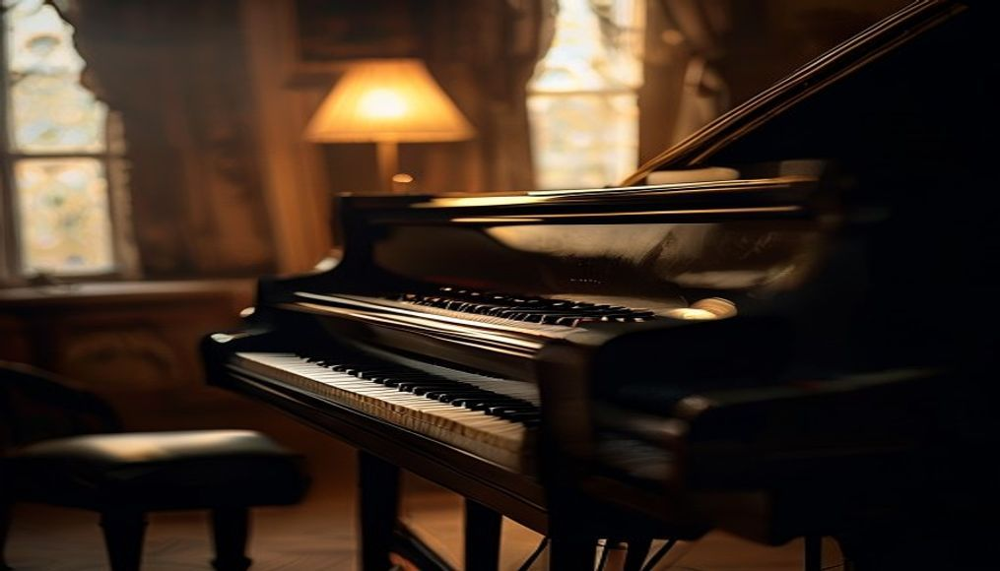

ピアノを、一生つづく力
に。
この線は、ピアノの弦です。画像でも動画でもありません。
弦の揺れを、いまこの画面の中で計算しています。
触れると、その弦が鳴ります。
こんな方へ
お子さまに
基礎からしっかり習わせたい。楽譜を自分で読めるようになってほしい。 人前で弾く経験をさせたい。
大人の方に
昔ならった曲をもう一度。まったくの初めてから。 自分のペースで、あせらず続けたい。
再開される方に
ブランクがあっても大丈夫です。指は思っているより覚えています。 まずは一曲、弾ける形に戻すところから。
音楽を、「自分のもの」に。

弾けた、で
終わらせない。
譜面のとおりに指が動くことと、音楽が自分のものになることは別です。 ポーセラーツ教室Le coeurでは、次の一音をどう鳴らしたいか、そこを一緒に探します。
正解をなぞる時間ではなく、選ぶ時間にしたいと思っています。 だから、うまくいかない日も含めて、そのまま持ってきてください。
レッスンのご案内
お子さまコース
- 月3回・30分7,000円
- 月4回・30分8,500円
- 月3回・45分9,500円
年齢とペースに合わせて、時間を選べます。
大人コース
- 月2回・45分8,000円
- 月3回・45分11,000円
- 1回のみ4,000円
お仕事の都合に合わせて、日程を調整できます。
そのほか
- 体験レッスン1,000円
- 入会金5,000円
- 発表会（年1回・任意）別途
選ばれる三つの理由
ひとりずつ違う進め方
同じ教材を同じ順番で、ということはしません。 その方が今いちばん弾きたい曲から入ることもあります。
おうちでの練習も一緒に
レッスンの最後に、次の一週間で何をするかをひとつだけ決めます。 多すぎると続かないからです。
発表の場があります
年に一度、小さな発表会を開いています。参加は自由です。 人前で弾くと、ふしぎと上達します。
講師のご紹介
（お名前が入ります）
※ ここには講師のご紹介が入ります。ご経歴、音楽を始めたきっかけ、 レッスンで大切にされていること——このあたりを3〜5行いただければ、こちらで整えます。
お写真をお持ちでしたら、右側に入ります。お持ちでなければ、このままでも構いません。
生徒さんの声
「子どもが自分から練習するようになりました。
先生が毎回ひとつだけ宿題を出してくださるので、無理がないみたいです。」
— 小2のお母さま
「30年ぶりに再開しました。指は動かないのに、
曲は覚えているものですね。今は月に2回、楽しみに通っています。」
— 50代・女性
教室のご案内
- 教室名
- ポーセラーツ教室Le coeur
- 所在地
- 愛知県岡崎市
- レッスン
- ポーセラーツ教室
- 体験
- 1,000円（30分）
- 駐車場
- あり
- お問い合わせ
- メールにて承ります
このページは、ポーセラーツ教室Le coeur 様へのご提案として
Web制作 ゆたか がお作りした見本です。文章・料金・写真はすべて仮のもので、
実際の内容とは異なります。ご希望に合わせて、すべて差し替えられます。
背景の線は、ピアノの弦です。画像でも動画でもなく、
弦の揺れをその場で計算しています。触れると、その弦が鳴ります。